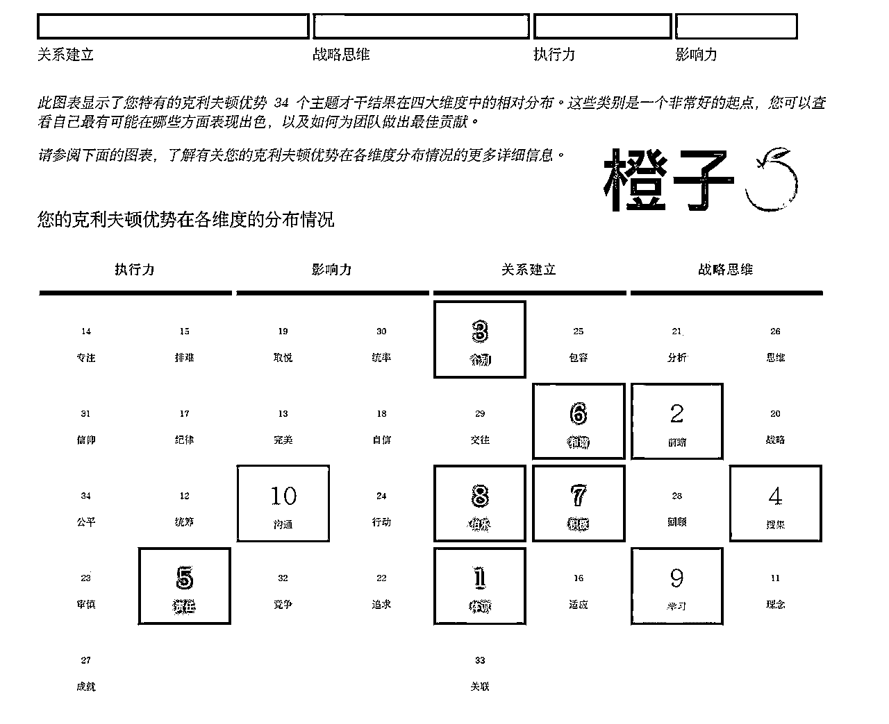

来源：https://q07m9lrm5ih.feishu.cn/docx/XvZrdPRGcoy3VyxjkASciGXNnEh
大家好，我是橙子是锦鲤呀，去年11月加入生财，主业是金融机构国企员工（工作有销售卖理财产品的要求），副业在做盖洛普咨询教练。人生成就感的来源就是能在短期内做成一件事情，而刚好，这件事情在加入生财，参加了个人优势航海以后完成了。
去年这个时候，我充满了焦虑和迷茫，不仅业绩总是不达标，我每天也都在想，如果脱离了平台我能干什么，如果脱离了平台的我能干成什么，陷入了自我怀疑的陷阱里，但是现在我可以自信的说：因为盖洛普，我打通了主业销售理财产品的卡点，一个月完成了2350万的业绩。
这次爆发不是源于运气，而是思维上的转变，是盖洛普打通了我的销售卡点，是个人优势航海让我更加清楚的认识到和了解自己，找到了适合自己的工作方式。所以与其等待运气的到来，不如主动去转变思维。我又是怎么做到的呢？接下来我会通过以下几个主题向大家介绍我的这段转变之旅：
一、我的成长故事
二、盖洛普如何打通我的销售卡点
三、2350万业绩的成交过程复盘
四、经验之谈
期间，感谢生财，感谢个人优势航海，感谢盖洛普，是它们让我打开了新的视角去看世界，看自己，看未来；感谢靠谱，感谢醒醒，感谢苏姐（顺序不分前后）让我看到我人生更多的潜能。
详情请移步飞书：
我从小到大都属于那种非常听话的乖乖女，唯一的一次叛逆，是自己非要退学出国读研究生，不知道和爸妈battle了多少次，最终是成功了。其实想来，很多人觉得国内读研究生已经很好了，为什么要出国呢，最主要的原因是，我在读研的时候突然觉得：人生的顺理成章好像就是读书出来，再选择一个离家近的公司去工作，然后结婚生子；我突然觉得我不想要还没有体验过别的生活，没有看过更大的世界，就选择在一个地方安稳下来。那一眼看的到头的人生，我一点也不喜欢。
毕业，我去了一家地产投资（没错，就是大家耳熟能详的那家），然后地产暴雷了；于是失去了应届生身份的我开始重新找工作，幸运的是，我顺利的从事了一级股权投资；每天的工作都充满着新鲜和未知，我的日常就是和各位创始人，投资人的交流中学习成长；那一段时间，我的见识和眼界迅速的提高。
但是后来的故事却很奇妙的发生了转折，我本着越跳越好的心来到了一家大国企，但是令我没有想到的是，我没有去到自己想去的岗位，而被安排在了基础岗位轮岗，然后去等待好的机会去调动。
于是，我现在的简介成为了：主业是金融国企员工，前一级股权市场投资者，因为机缘巧合从事了现在的工作，销售金融理财产品。我当然不甘心啊，因为我希望每一天都是有成长的（前工作的定位很符合我的需求，但是现在的岗位不符合）；所以我对于销售金融理财产品这个事情是有心理上的排斥的，我觉得我做不了，也做不好，所以浑浑噩噩的浪费了半年的时光。直到3月份参加了个人优势航海，做了一份盖洛普测试，才突然理解了以前的行为和心理活动，也打通我对现在销售工作的卡点，下面附上我的盖洛普，可能大家一眼看下来不会有啥感受，别担心，接下来我将结合我的盖洛普结果介绍我是如何打通我的销售卡点的：：

在测盖洛普以前，我一直觉得我对现在的工作不是很喜欢，我可能不是很适合销售等等，也觉得KPI好难完成，也不知道怎么做；但是当测完盖洛普以后，才知道我所适合销售风格和方式。
同样，通过盖洛普测试，我找到了以前业绩不好的归因：
后来，我又是怎么利用盖洛普去做相对应的调整的呢
（1）如何建立自己对于产品的认可：发挥【积极】才干，抑制【责任】才干的过度发挥，抑制【体谅】才干的过度发挥，抑制【前瞻】才干的过度发挥。首先不要让自己想太过长远的事情，因为理财的期限是可以自由选择的，可以用短期的理财去减少风险的发生；也不要过度担心理财会出现问题，给客户造成损失，因为大的经济环境我们没办法左右，我们能做的就是在可预见的范围内，帮助客户选择更加安全的产品，和规避最大的风险，因为没有百分百安全的理财。
（2）如何筛选客户：抑制【体谅】才干的过度发挥，也要抑制【和谐】才干的过度发挥，多发挥我的【积极】才干，因为其实很多一部分的内耗，和对于熟人的目的性的感受都来自于关系建立才干的过度发挥；首先【和谐】和【体谅】就容易让我在这件事上内耗，可能事情还没发生，我的心理就出现了千万种想法，会顾忌别人的感受，也会不想和朋友的关系受影响，但是又觉得这种理财对他们或许是有好处的；于是两种想法拉扯，自己就会很内耗；后来想法的改变是因为，我发现很多朋友都是属于没有找到很好的理财方式，我的推荐只是给他们提供了一种选择，讲清楚利弊，而不是强迫他们；每次做这些的时候，都用【积极】才干告诉自己，这对于他们来说是一种好事，而不是一种坏事，事情就好推进多了。如果会因为这个影响关系，可能这就不是一个好的客户，客户是要筛选的。
（3）销售风格：以前的工作方式更多发挥的是战略思维，比如【前瞻】【学习】【搜集】，所以更加想要和那些能带给自己成长的人去交流，所以【沟通】才干的发挥更多结合的是战略思维才干；但是后来发现，现在的客户并不是都从事类似职业的，可能有教师，也可能有普通员工等等，所以【沟通】才干的发挥更多的要结合关系建立才干，用【个别】才干去识别每一个客户的特点，然后结合【沟通】和【体谅】才干让客户觉得我们始终在站在他们的角度去考虑问题的，而不单单是为了推销产品，最后在【和谐】才干的发挥下，成单的概率性就会变高。
其实产品没有差异化，差异化的地方是在于人，所以对于我来说，能发挥自己的优势才干给他们提供情绪价值，让他们感到舒服就是差异化所在，也是成单的关键。
所以，利用盖洛普打通卡点以后，我在一个月以内的业绩累积达2350万，接下来，会讲一下自己是怎么做到的。
2350万的累计出单来源于三个客户：3个自然人客户（购买1350万），1个机构客户（购买1000万）；认识自然人客户纯属是运气好，是我在值班的时候，在门口碰见的客户，然后邀请他们沟通和休息，从而循序渐进，挖掘他们的需求，然后根据需求提供一些专业性的建议和方案，然后成单；机构客户是缘于老客户的转介绍，但是介绍之后的跟进是需要时间的，因为机构客户的理财产品的购买要考虑资金的流动性、收益性、安全性等，所以提供合适的方案是一个方面；但更重要的是让别人去相信你，相信你所在的平台，看到平台之间的差异化是更重要的，这个一部分取决于专业性，一部分取决于沟通方式。
当然，这些客户从认识到成交也是过了好长一段时间，所以如何让别人信任你，信任这个平台是非常必要的事情，所以：
（1）把握沟通的频率：既不能太频繁，也不能不联系，因为人性里面，当一个人去频繁推销某个产品的时候，就会自然的认为这个产品没有价值，以及销售量不好，好的产品是不需要推销的，是靠吸引的。
（2）关注用户的需求：其实每个客户对于产品的需求是不一样的，所以不能为了完成任务去销售，而更要站在客户的角度上，像我遇见的自然人客户，一次买了200万，最开始是抱着一点都不相信的心理，到开始怀疑，再到了解，再到相信购买，持续了2个月；我知道对于他们来说，理财的购买一个是为了安全性，一个是为了养老，也知道他们的钱来之不易，不是属于钱生钱的大客户，所以我会用我身边的长辈举例子，也会反复跟他们强调，一定要谨慎购买，如果没想好就不要买，不能带着不确定的心态去购买理财，也不要全然去相信销售人员，理财是有风险的，所以要考虑自己的风险承受能力，当然我后来发现，我的这种“劝退”一定程度上对于后面的开单起了很大的作用。
（3）要去情感共鸣：当然这是自然人客户的特点，我会陪着叔叔阿姨去聊生活，聊现状，所以叔叔阿姨每次都很开心（一共见了3次面，电话沟通2次），到后面每次阿姨提问产品的时候，叔叔就会帮我回答阿姨的问题，形成内部的和谐沟通。
（4）关于个人IP的打造：这点朋友圈的营销很重要，因为这是我的主业，所以我会发一下朋友圈，但其实朋友圈的营销对我来说不是那么重要，这个和个人偏好有关，我是觉得线下更能建立亲切的关系，同时通过盖洛普测试，我也发现了我的关系建立和战略比较靠前，所以会利用这些优势去帮助成单。
（5）关于售后：当然这点我现在做的不是很好，除了逢年过节的，我平常基本上没有什么售后，全靠前期情感联系。但是前期的感情维系已经建立了很好的信任关系。
总结：关于自然人的成单，其实还是依旧符合成交链条：流量——转化——产品——成交，缺一不可。
介绍：这个客户在我这里半年累计购买2000多万，其实理财产品都大同小异，所以怎么去成交就是最重要的；首先，就是理解客户需求，如果客户偏好短期，就不要在开始接触的时候就给别人极力推荐一些别的产品，先满足他们的需求去建立信任感，后面再针对公司的性质去推荐相应的产品（对应到知识付费，就是先提供情绪价值，再满足需求，然后再成交，再深入）
（1）客户需求：企业性质是建筑类企业，所以日常的资金要求是安全性和流动性，那就推荐的是7天的理财，可以随时取的产品；年底资金回笼，工程停工，那就可以推荐3个月左右的。核心就是一定要根据实际情况满足客户需求。
（2）沟通能力：这个和自然人客户不一样，因为机构的创始人是资产雄厚，且眼界很开阔的人，他们也不需要有什么情感共鸣，更多的是聊实事，聊经济，聊现状。这个时候通过盖洛普测试我才了解到我的【沟通】+ 战略思维发挥了很大的优势，因为我本身就喜欢和那些可以带给我见识和成长的人去聊天，然后日常中，【学习】和【搜集】也让我喜欢去输入一些东西，所以本身知识储备就还可以，再发挥一些其他优势和创始人沟通、了解需求、成交等，这些就会容易很多。
（3）关于售后：机构的售后和自然人的售后很不一样，创始人日常繁忙，所以需要有效沟通，每次的客户维护都会根据现有的一些情况和创始人爱好去聊，这方面【个别】才干发挥了很大优势。
我以前非常羡慕那些可以侃侃而谈，又可以输出自己价值，以对等姿态去成交的人；但是现在我也做到了。在没遇到盖洛普以前，我怀疑过自己很多次，当然那个时候的业绩是半年2000万，但是遇到盖洛普以后，我真的意识到，怎么去最大化发挥自己的优势去完成一些事情，所以1个月就完成了自己以前半年才完成的业绩。
我一直是个非常喜欢思考未来的人，结合盖洛普，这当然和我的【前瞻】才干有关系了，之前我不知道，所以会焦虑，会迷茫，会不知道未来的路怎么走（前瞻的人喜欢从对未来的规划去倒推现在应该做什么）；我输入了很多东西，却从来没有输出过，我看到那么多厉害的人，常常就会觉得自己很渺小。
细看我的履历，我毕业就进入了投资岗，接触了很多大老板和优秀的投资人，这些人都有非常好的履历，这段经历让我增长了见识，拓宽了眼界，也知道了世界不止一种活法。所以那时候的我，思想是自由的。
但是换了工作以后，我好像把自己禁锢住了，我忽略了眼前可以做的太多的事情，销售能力的锻炼和咨询能力的锻炼，这两个走到任何时候都是刚需的技能。你看，当你开始注意的时候，你就会收获到一定的成果。不是怕做不好，而是怕不想做。
有时候我会想，命运没有带你直接到达某个你想去的目的地，可能就会给你准备一些别的惊喜。如果没有机缘巧合的来到这个岗位，我并不知道自己有这么好的销售潜能，我也不会去探索副业，不会遇见生财，不会遇见个人优势航海，不会知道自己向往自由的决心；可能我就会把更多的时间和精力集中放在主业上。现在，我非常坚定的知道，一个人不依靠平台所拥有的技能才是真正的核心竞争力，依靠自己才是真正的自由。
所以借用爱情公寓的一句话：我更加明确自己想要的生活是自由的，每天都有新的探索，新的风景，新的冒险；可能不是居无定所，但一定会是更加鲜活的人生。
最后，感谢生财，感谢个人优势航海，感谢盖洛普，是它们让我打开了新的视角去看世界，看自己，看未来；感谢靠谱，感谢醒醒，感谢苏姐（顺序不分前后）让我看到我人生更多的潜能。